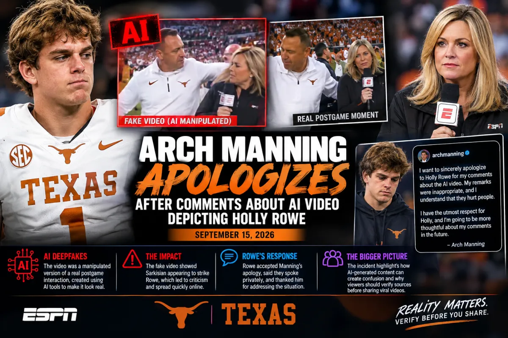

Arch Manning Apologizes After Comments About AI Video Depicting Holly Rowe
Sports | College Football
Published: Tuesday, September 15, 2026

Texas quarterback Arch Manning has apologized after comments he made about a manipulated artificial-intelligence video depicting Longhorns coach Steve Sarkisian appearing to strike ESPN reporter Holly Rowe.
Manning discussed the video during a media availability Monday following Texas' dramatic victory over Ohio State. The AI-created clip had altered footage from a real postgame interaction between Sarkisian and Rowe.
Manning's remarks quickly spread online and generated criticism because the fabricated video portrayed violence against a woman.
On Tuesday, Manning addressed the situation publicly and apologized to Rowe.
Manning Addresses His Comments
In an Instagram statement, Manning acknowledged that his comments about the AI video were inappropriate.
He said he understood that his remarks had hurt people and specifically apologized to Rowe for the situation.
Manning also said he respects Rowe and intends to be more thoughtful about his comments in the future.
Rowe responded publicly to Manning's apology, saying that the two had spoken privately about what happened. She thanked him for addressing the situation and said they would move forward respectfully.
The Video Was Based on a Real Postgame Moment
The AI video did not depict an actual physical confrontation.
It originated from a genuine exchange involving Sarkisian and Rowe after Texas defeated Ohio State.
Earlier in the game, technical problems had interrupted a planned halftime interview involving Sarkisian and ESPN reporter Laura Rutledge.
After Texas' victory, Rowe approached Sarkisian for a customary postgame interview. Sarkisian appeared caught up in the celebration, shouted Texas-related chants and walked away without completing the interview.
Someone subsequently manipulated footage from the interaction to create a fake video showing Sarkisian striking Rowe.
The altered footage was then circulated online.
AI Deepfakes Create New Challenges
The incident highlights how artificial intelligence can be used to create realistic-looking videos that portray people doing things that never actually happened.
Unlike traditional edited video, newer AI tools can make fabricated scenes appear convincing enough that viewers who encounter them without context may have difficulty immediately recognizing that they are fake.
The Texas incident also demonstrates how quickly manipulated content can spread once it becomes part of a social-media conversation.
Manning's comments helped draw additional attention to the fabricated clip before he later apologized.
Rowe's Response
Rowe, a longtime ESPN reporter, accepted Manning's apology.
She has covered college football and numerous other major sporting events during her career and has been a prominent figure in sports broadcasting for decades.
Following Manning's statement, the Association for Women in Sports Media also expressed support for Rowe and called attention to the importance of respectful treatment of women working in sports media.
An ESPN spokesperson did not provide a comment in the reports surrounding the incident.
A Reminder About AI-Generated Content
The controversy comes as AI-generated images, videos and audio continue to become more common across social media.
The technology can be used for entertainment, creative projects and other legitimate purposes, but fabricated videos can also create confusion when viewers mistake altered material for authentic footage.
The incident involving Manning, Sarkisian and Rowe serves as another example of why viewers should consider the original source of a video and look for reliable reporting before assuming that a viral clip accurately represents an event.
For Manning, the controversy ended with a public apology and Rowe's acknowledgment of it.
For the broader sports and media industries, the episode adds to an ongoing conversation about the growing influence of artificial intelligence and the challenges created when fabricated content is presented alongside real-world events.